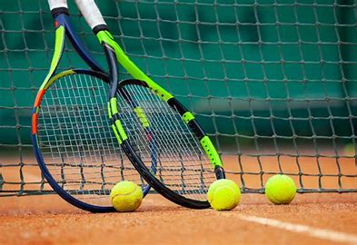
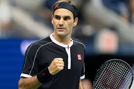
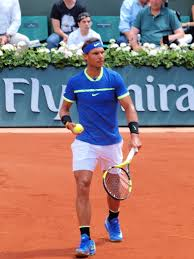
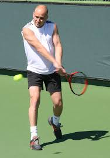
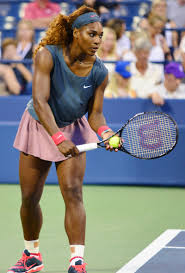
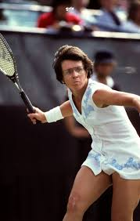
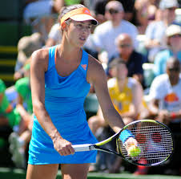

Tennis - ჩოგბურთი
ჩოგბურთის მოედანი - კორტი
..........................................................
თამაშის წესები: თამაშები ერთეულთა და წყვილთა თანრიგებში ტარდება. მოთამაშეების ამოცანაა ჩოგნის დახმარებით ბურთი გადაიტანონ მოწინააღმდეგის ნახევარზე. ჩამწოდებელ მოთამაშეს ბურთის ორჯერ ჩაწოდების უფლება აქვს. მეორე ჩაწოდებას ის იყენებს მაშინ, თუ პირველი ვერ ჩააგდო ჩაწოდების მოედანში ან ბადეს ვერ გადააცილა. ერთ მოგებულ გათამაშებაზე მოთამაშეც ეწერება 15 ქულა, შემდეგ მოგებულზე ასევე 15, მესამეზე კი 10 ქულა (ე. ი. 15, 30 და 40). ხოლო, მეოთხე მოგებულ გათამაშებაზე ჩოგბურთელი უკვე იგებს. თუ ანგარიში თანაბარია (ე. ი. 40-40), მაშინ ერთ-ერთმა მოთამაშემ ზედიზედ 2 გათამაშება უნდა მოიგოს. 6 თამაშის მოგების შემთხვევაში მოთამაშე იგებს სეტს. თუ ანგარიში 6:6-ია, მაშინ ხდება დამატებითი გათამაშება, რომელსაც ფრემტეხი (ე.წ. „ტაიბრეიკი“) ჰქვია. ჩოგბურთელმა უნდა მოიგოს 2 სეტი თამაშის მოსაგებად. გამონაკლისია მამაკაცთა შორის დიდი მუზარადის ტურნირები, სადაც ჩოგბურთელს სჭირდება 3 სეტის მოგება თამაშის მოსაგებად.
ისტორიკოსების უმრავლესობის აზრით, ჩოგბურთი XIII საუკუნის საფრანგეთში ჩაისახა. თუმცა დღემდე გამოცანად რჩება, თუ ვინ ითვლება ამ თამაშის ნამდვილ ფუძემდებლად. ისტორიკოსების უმრავლესობა თანამედროვე ჩოგბურთის მამამთავრად დიდი ბრიტანეთის კავალერის მაიორს უოლტერ კლოპტონ უინგფილდს (Walter Clopton Wingfield) მიიჩნევენ. 1873 წელს უინგფილდმა ახალი თამაშის წესები გამოაქვეყნა, რომელიც ეფუძნებოდა რამდენიმე თამაშის პრინციპებს, კერძოდ: კორტ-ჩოგბურთს, ბადმინტონს, ფაიფსა და რეკიტს. იმისთვის, რომ გამომგონებლის უფლება შეენარჩუნებინა, ამ თამაშს „სფერისტიკა“ უწოდა (sphairistik ბერძნული სიტყვაა და ნიშნავს „ითამაშე ბურთი“). პირველი საჩოგბურთო ტურნირი 1877 წლის 9 ივნისს ჩატარდა , რომელსაც შემდგომში უიმბლდონი ეწოდა.
...........................................................................
1. როჯერ ფედერერი - შვეიცარიელი ჩოგბურთელი, ცნობილი თავისი სტილით და ტექნიკით. 20 გრანდ სლემის ტურნირების გამარჯვებულია.
2. რაფაელ ნადალი - 22 გრანდ სლემის ტიტული, განსაკუთრებული წარმატება სირბილზე.
3. ნოვაკ ჯოკოვიჩი - 24 გრანდ სლემის ტიტული, მას აქვს რეკორდული შედეგები.
4. პიტ სამპრასი - 14 გრანდ სლემის ტიტული, ერთ-ერთი ყველაზე გავლენიანი ჩოგბურთელი.
5. ანდრე აგასის - 8 გრანდ სლემის ტიტული, სექსუალური და ტექნიკური თამაში.
........................................................................................
1. მარტინა ნავრატილოვა - 18 გრანდ სლემის ტიტული, წარმოუდგენელი კარიერა.
2. სენდა უილიამსი - 23 გრანდ სლემის ტიტული, თანამედროვე ჩოგბურთის ერთ-ერთი უდიდესი.
3. ბილლი ჯინი კინგი - 39 გრანდ სლემის ტიტული, ქალი უფლებების აქტივისტი.
4. იულია კორტი - 24 გრანდ სლემის ტიტული, მრავალმხრივი სპორტსმენი.
5. ლინდა ნაორტი - 18 გრანდ სლემის ტიტული, აღიარებული ტექნიკური უნარებით.
